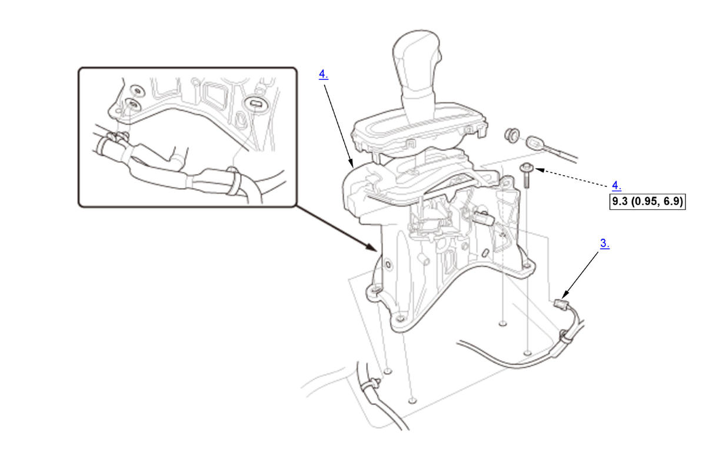
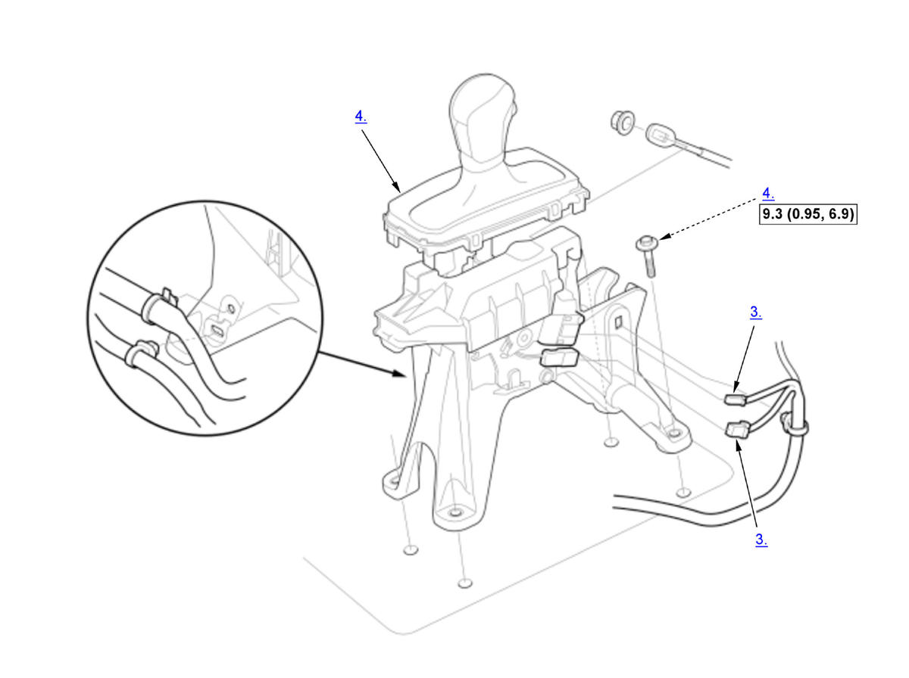

Removal and Installation: Procedure
Numbered call-outs in figure pertain to list numbers in following procedure.

 Courtesy of HONDA, U.S.A., INC.
Courtesy of HONDA, U.S.A., INC. |
Torque: N.m (kgf.m, lbf.ft) |
Numbered call-outs in figure pertain to list numbers in following procedure.

Courtesy of HONDA, U.S.A., INC. |
Torque: N.m (kgf.m, lbf.ft) |
- Center Console - Remove
- Shift Cable (Shift Lever Side) - Remove
- Connector (Shift Lever) - Disconnect
- Shift Lever - Remove
- All Removed Parts - Install
1. Install the parts in the reverse order of removal. - Shift Cable - Adjust
- Shift Lever - After Install Check
1. Turn the vehicle to the ON mode. 2. Move the shift lever to each position, and check that the shift position indicator follows the shift lever operation.
3. Shift the transmission to P position/mode, and check that the shift lock works properly.
4. Push the shift lock release, and check that the shift lever releases. Also check that the shift lever locks when it is shifted back to P.
5. Start the engine.
NOTE: Check that the engine starts in P or N position/mode, and does not start in any other positions/modes.
6. Make sure the vehicle is turned to the OFF (LOCK) mode with the shift lever in P position/mode. If it does not, adjust the shift cable again.